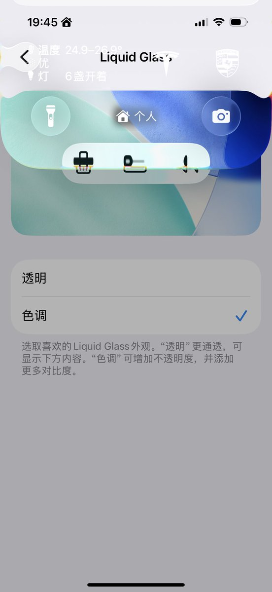
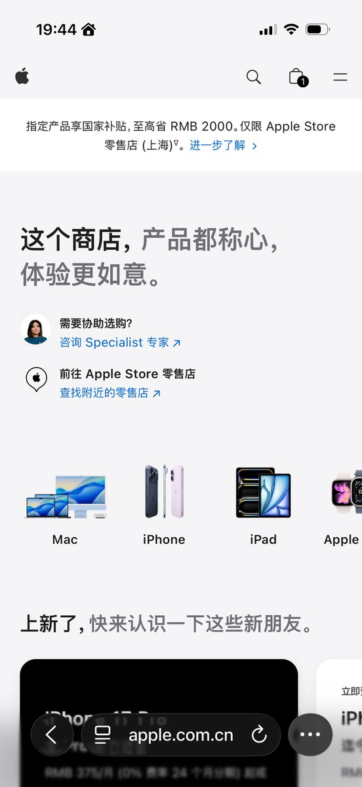

小虚空🍥
@tokerumaisurii
@blackyneko 唉我则是觉得哪怕透明都不够透明，我想要以前最透明过的那个版本的Liquid Glass……


八雲チェン
@blackyneko
其实好多人还没真的用过，就以为这个按钮是用来关闭大部分甚至全局 Liquid Glass，殊不知，只是能增加一点对比度，和不透明度而已，从而增加可读性。
该液态玻璃还液态玻璃。
"Apple 服软啦""Apple 不知道怎么选，让顾客选"
我觉得这就和众多辅助功能中用来关闭一些动态效果的开关的没什么两样。 https://t.co/xtcLqoDP5j